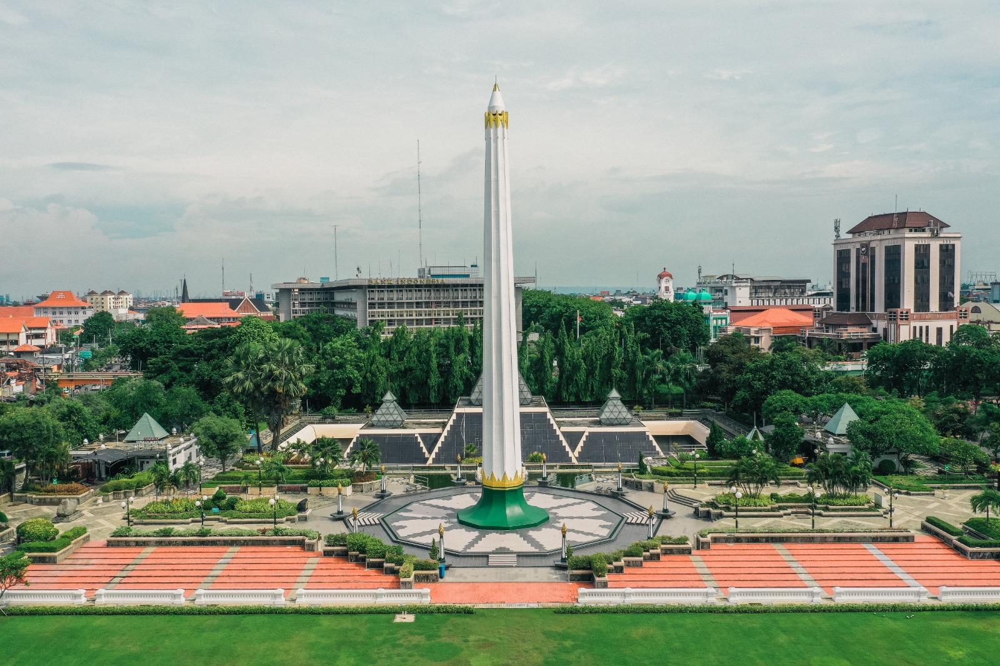
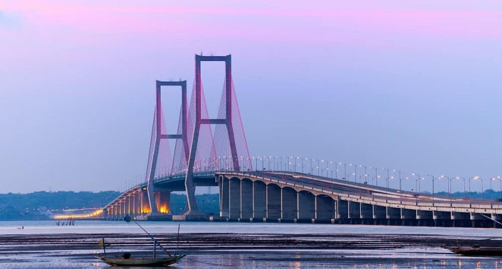
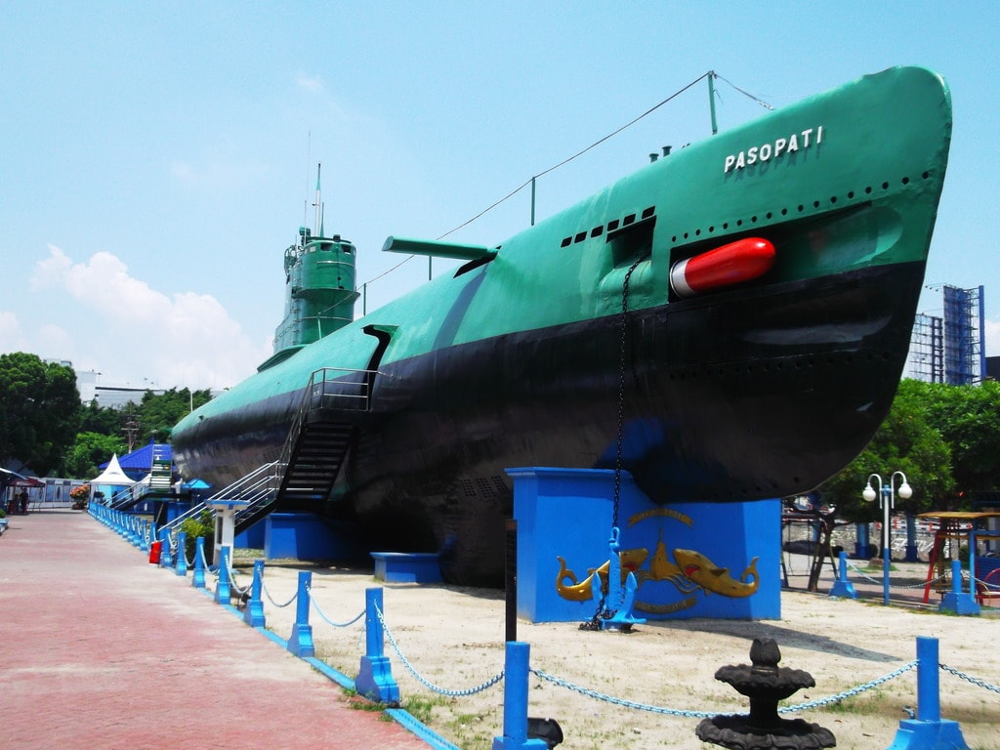
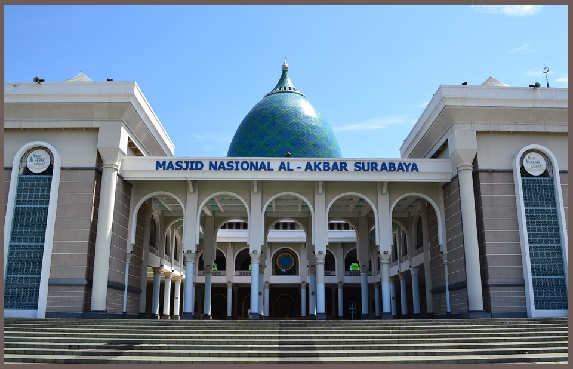
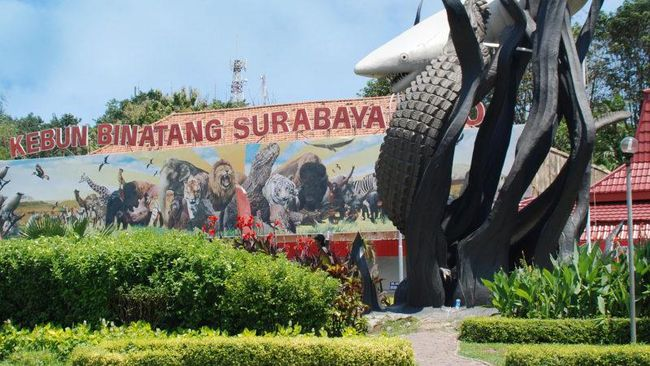
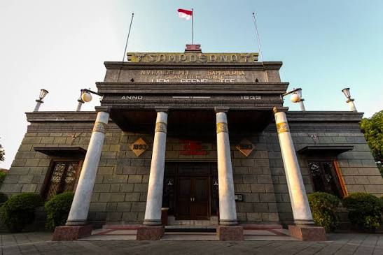

Premium destinations ranging from historical monuments to coastal ecotourism in East Java.

A 41-meter-tall monument symbolizing the resistance of the people of Surabaya during the Battle of November 10, 1945. Beneath it lies the November 10 Museum, offering dioramas and historical artifacts that provide a profound experience of the nation's unforgettable heroic spirit.

The longest bridge in Indonesia, spanning 5.4 km and connecting Surabaya to Madura Island. Beyond being a vital transportation route, the areas around the bridge, especially on the Surabaya side, offer breathtaking sunset views and iconic photo opportunities.

A unique museum featuring the original KRI Pasopati 410 submarine. Visitors can step inside the hull to see the torpedo room, navigation deck, and crew cabins firsthand, making it a highly memorable and interactive maritime educational destination.

The second-largest mosque in Indonesia, featuring magnificent architecture and a highly iconic giant blue dome. Beyond being a center of worship, the mosque has a 99-meter-tall observation tower that offers stunning panoramic views of the city of Surabaya from above.

One of the oldest and largest zoos in Southeast Asia. KBS continues to evolve into a modern conservation and education center, housing thousands of animal species from around the world in increasingly comfortable and well-maintained habitats.

A Dutch colonial architectural building that was formerly Indonesia's first cigarette factory. Today, it serves as a museum, art gallery, and cafe, showcasing the long history of the kretek cigarette industry alongside fascinating contemporary art exhibitions.